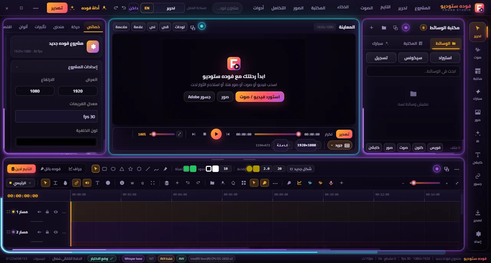
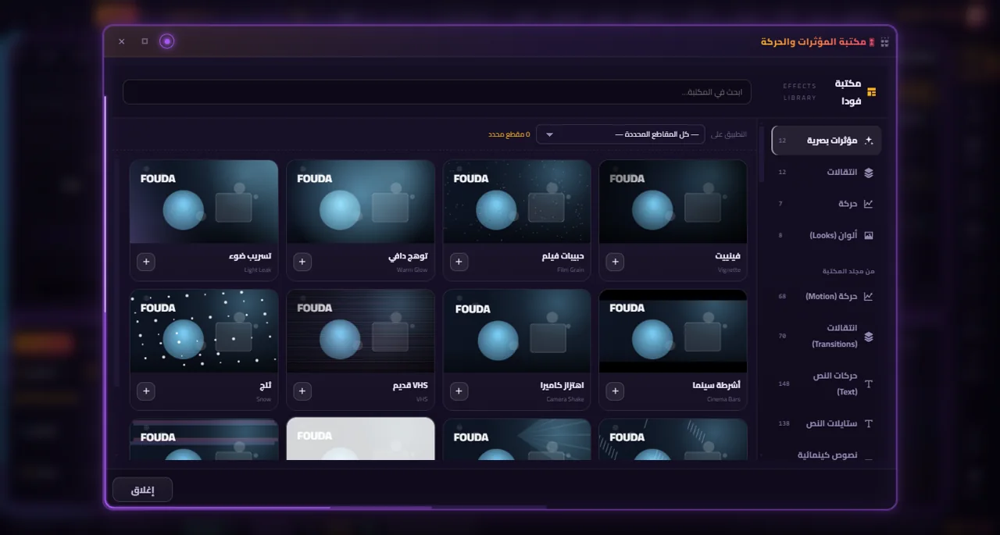
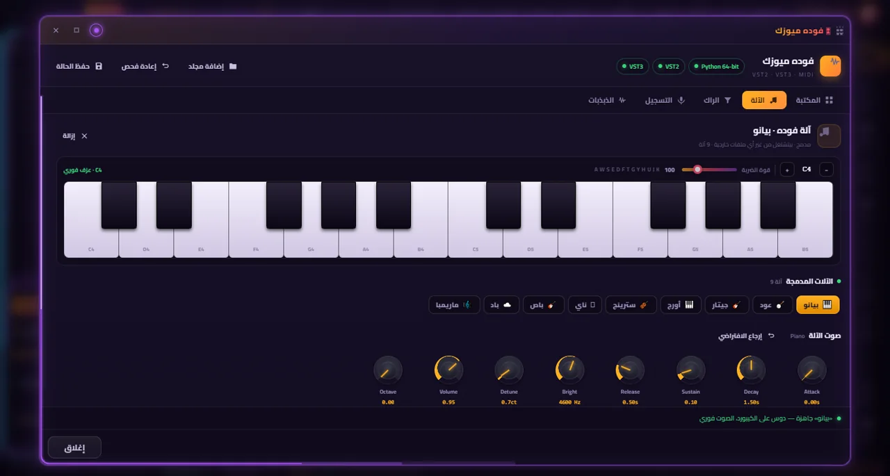
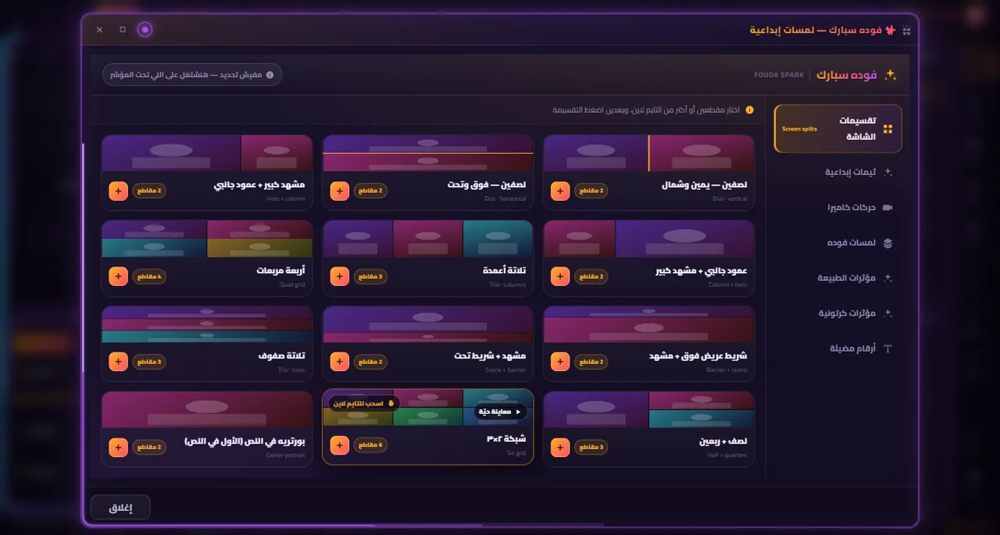
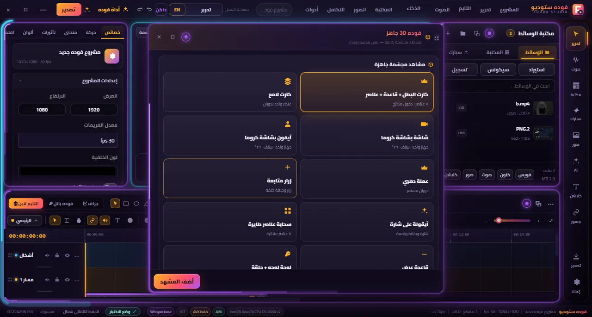
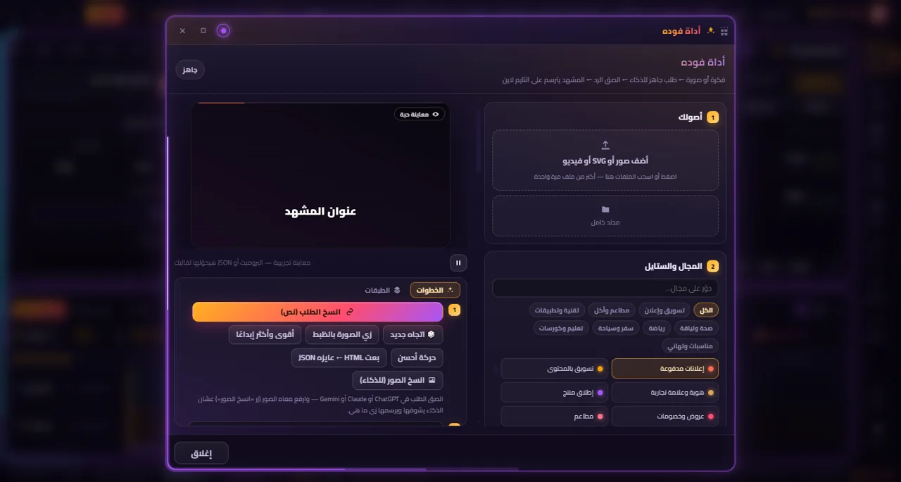

فوده ستوديو مش مجرد محرر فيديو. 64 أداة احترافية تشتغل مع بعض في واجهة واحدة: مونتاج متعدد الطبقات، مؤثرات وانتقالات، دبلجة وترجمة آلية، استوديو موسيقى، استوديو صور، وخرائط تكتيكية — كل ده على جهازك.
التفعيل خلال دقائق · يعمل بدون إنترنت بعد التثبيت

بدل ما تدفع لخمس برامج مختلفة وتنقل الملفات بينهم، كل حاجة موجودة في استوديو واحد بيشتغل على جهازك.
تايم لاين متعدد الطبقات، كي فريمز ومنحنيات حركة، قص دقيق، وتصدير بجودة عالية — بنفس أسلوب برامج الاحتراف الكبيرة.
يفرّغ الكلام من الفيديو، يترجمه، ويطلّع صوت بديل — لفيديو أجنبي أو محتوى بلغة تانية، من غير أي برنامج خارجي.
بيانو تفاعلي، آلات، وإمكانية تحميل فلترات VST — تسجّل وتظبط الصوت جوه البرنامج نفسه.
يحلّل الإيقاع ويحط علامة على كل بيت، وبيوزّع الصور على النغمات تلقائيًا — مونتاج على الموسيقى في دقائق.
إزالة خلفية، قص ذكي، تعديل ألوان، ورسم — كل أدوات الصور اللي بتحتاجها لتصاميمك وثيرات الفيديو.
مكتبة انتقالات ومؤثرات جاهزة، مشاهد 3D، وخرائط تكتيكية متحركة — كلها قابلة للتخصيص بالكامل.
لقطات حقيقية من النسخة نفسها اللي هتثبتها — مش صور تصميم.





مفيش حسابات، ومفيش خطوات معقّدة.
نزّل الملف المضغوط، افك ضغطه (كليك يمين ← Extract All)، وبعدين شغّل Setup. التثبيت لمستخدم واحد — مش محتاج صلاحيات مدير.
أول تشغيل هيظهرلك كود الجهاز وزر واتساب. اضغط الزر وابعت الكود — عشان نفعّل نسختك.
بمجرد التفعيل البرنامج بيفتح بكل الأدوات. بعد كده يقدر يشتغل بدون إنترنت.